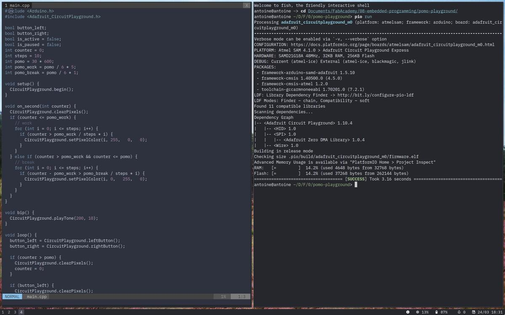
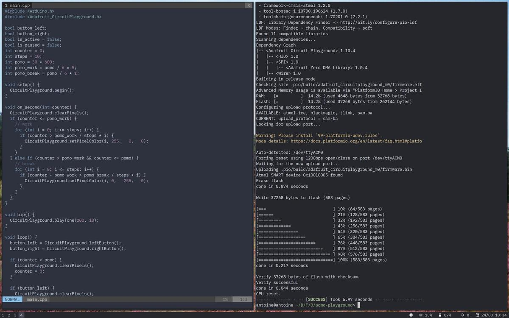
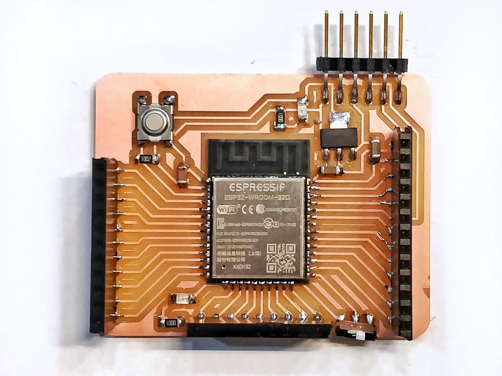
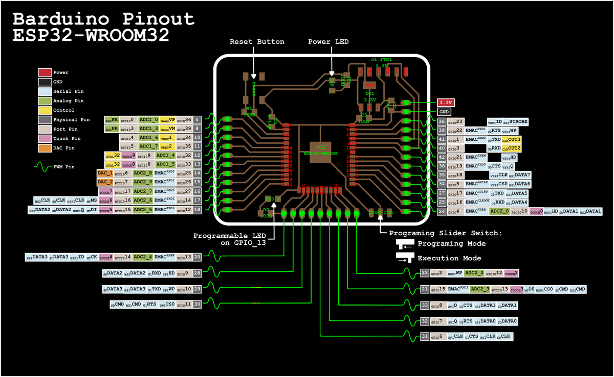

Embedded programming
Two weeks ago, I designed a pomodoro timer during the Electronics design week. It's now time to program it. I'm going to write the piece of code that will light my LEDs as time goes by and find a way to send it to the ATtiny1614 chip. I'm going to focus on the latter: how to send a program (= program) a chip. Well, that was the plan.
Unfortunately, in the meantime, the coronavirus has hit Spain (and the whole world). We are now all in quarantine, with no access to the lab. I'll have to work from home, with the equipment I already have, nothing more.

For this reason, I'm going to use a Circuit Playground Express. This tiny board is already equipped with 10 mini NeoPixels, 1 motion sensor, 1 temperature sensor, 1 sound sensor, 1 mini speaker, 2 push buttons, 1 slide switch, infrared receiver and transmitter and 8 alligator-clip friendly input/output pins. It's a perfect board for quick prototyping and code experiments.
Pomodoro code
How I want to use my pomodoro
- Press the left button to start the timer
- If it's running, press the left button to pause the timer
- If it's paused, press the left button to resume the timer
- If it's paused, press the right button to stop the timer
- When it's running, the LEDs light up one by one until the time limit
- When it's running and it's a work period, LEDs are red
- When it's running and it's a break period, LEDs are green
- When it's paused, all the LEDs are light up and blue
The code that does this using the Arduino framework
bool button_left;
bool button_right;
bool is_active = false;
bool is_paused = false;
int counter = 0;
int steps = 10;
int pomo = 30 * 600;
int pomo_work = pomo / 6 * 5;
int pomo_break = pomo / 6 * 1;
void setup() {
CircuitPlayground.begin();
}
void on_second(int counter) {
CircuitPlayground.clearPixels();
if (counter <= pomo_work) {
// work
for (int i = 0; i <= steps; i++) {
if (counter > pomo_work / steps * i) {
CircuitPlayground.setPixelColor(i, 255, 0, 0);
}
}
} else if (counter > pomo_work && counter <= pomo) {
// break
for (int i = 0; i <= steps; i++) {
if (counter - pomo_work > pomo_break / steps * i) {
CircuitPlayground.setPixelColor(i, 0, 255, 0);
}
}
}
}
void bip() {
CircuitPlayground.playTone(200, 10);
}
void loop() {
button_left = CircuitPlayground.leftButton();
button_right = CircuitPlayground.rightButton();
if (counter > pomo) {
CircuitPlayground.clearPixels();
counter = 0;
}
if (button_left) {
CircuitPlayground.clearPixels();
if (!is_active) {
is_active = true;
bip();
} else if (is_active && !is_paused) {
is_paused = true;
bip();
} else if (is_paused) {
is_paused = false;
bip();
}
}
if (button_right) {
if (is_active && is_paused) {
is_active = false;
is_paused = false;
counter = 0;
CircuitPlayground.clearPixels();
bip();
}
}
if (is_active && !is_paused) {
counter = counter + 1;
}
if (is_paused) {
for (int i = 0; i <= steps; i++) {
CircuitPlayground.setPixelColor(i, 0, 0, 55);
}
}
if (counter % 10 == 0) {
on_second(counter);
}
delay(100);
}
PlatformIO
PlatformIO is a cross-platform, cross-architecture and multiple framework tool for embedded programming. It replaces Arduino IDE and offers a lot more subtilities and flexibility to write organized code for micro-controllers.
I use PlatformIO as a replacement for Arduino IDE because it allows me to use the text editor I want (I use Neovim, an hyperextensible Vim-based text editor) and because it integrates librairies of more than 700 differents boards, including the ones I use. It also has a unified debugger and a static code analyze which seems super useful for large scale projects.
Initialization
Because PlatformIO is based on Python, the installation is pretty straight-forward using pip: $ pip install -U platformio
An empty folder to host the project is needed for PlatformIO to set up its environment. Make a new one and go in it $ mkdir my-project && cd my-project then type $ pio init to initialize this folder with the PlatformIO structure.
piois the the shortcut forplatformio, it's the exact same thing but shorter
Then the structure should look like this:
platformio.ini src/ - main.cpp - main.h - … lib/ - input/ - - input.cpp - - input.h - - … - output/ - - output.cpp - - output.h - - … boards/ - board_definition.json
Next, search for the depedencies ID you might need, in this case the Adafruit_CircuitPlayground.h, by typing $ pio lib search "header:Adafruit_CircuitPlayground.h". The lib ID I need is 602.
Configure the project for this specific board, by following the datasheet found here.
These values have to be written in the platformio.io file.
[env:adafruit_circuitplayground_m0] platform = atmelsam board = adafruit_circuitplayground_m0 lib_deps = 602
Run & upload
Write your program into the src folder. The librairies have to be included at the very beginning of your program's files. In this case, the Arduino framework #include <Arduino.h> and the Circuit Playground framework #include <Adafruit_CircuitPlayground.h>.
Once everything is set up (not that much actually, because PlatformIO does a few thing for us), launch the $ pio run command to run and compile the code.

If it has been verified correctly, send it to your board to make it alive by typing pio run -t upload.

I've been using my pomodoro timer every day since I coded it, the Circuit Playground is always by my computer to remind me to take a 5-minutes break every 25 minutes and help me stay focused.
Programming the ESP32 — Barduino
We've been asked to assemble a Barduino few hours before the lab lockdown due to the coronavirus, in order to be able to experiment with it later at home.
Barduino 2.0 started as a project to have a ESP32 fabacademy compatible board to help the students develope their work on top of it. This board was designed by Eduardo Chamorro Martin with the help of Josep Marti and Oscar Gonzalez in Fab Lab Barcelona 2020.

To use that board with PlatformIO, pio init a new project specifically for the ESP32 chip.
$ pio project init --board esp32-devkitlipo
This command generates the platformio.ini files with the desired values.
[env:esp32-devkitlipo] platform = espressif32 board = esp32-devkitlipo framework = arduino
Then, as we can see on the datasheet, the ID of the programmable test LED is 13. We can use it to test if our board and our configuration work properly.

Datasheet
Also, there is a Programmer Slider Switch that changes the behaviour of the chip and tells it wheter it's in programming mode or execution mode. Obviously, we have to turn it to the left, the programming mode, before uploading our program.
The blink program, using PIN 13
#includeint led_in = 13; void setup() { pinMode(led_in, OUTPUT); } void loop() { digitalWrite(led_in, HIGH); delay(1000); digitalWrite(led_in, LOW); delay(1000); }
Turn the programming slider switch to the right, in execution mode, press the reset button and the test LED should blink. Olé.
Programming the ATtiny1614
The ATtiny1614 isn't yet supported by PlatformIO and therefore needs another method to be programmed. Fortunately, pyupdi is here! Pyupdi is a Python UPDI driver for programming the "new" tinyAVR and megaAVR devices.
Connectivity
Power comes from a USB cable via a FTDI connector. The data comes from the UPDI connector and goes through another FTDI connector.
Install
git clone https://github.com/mraardvark/pyupdi
pip install -r requirements.txt
Compile
The first thing to do is to compile the code with the Arduino IDE and then send it with pyupdi.
To be able to compile the code, first install the megaTinyCore library using the Libraries manager into the Arduino IDE and select the ATtiny1614 board.
From the Arduini IDE console, locate the .ino.hex that is generated when you compile and copy its path. It should be something like /tmp/arduino_build_342195/Blink.ino.hex.
Upload
Once your program is correctly compiled, open a terminal to send it to your device.
First, run ls /dev/* | greb usb to know the name of your port. It should look like /dev/ttyUSB0.
Then, run pyupdi with the name of the board you're working on tiny1614, the port where you want to send the code /dev/ttyUSB0 and the code itself /temp/arduino_buid_342195/Blink.ino.hex.
pyupdi.py -d tiny1614 -c /dev/ttyUSB0 -b 9600 -f /tmp/arduino_build_342195/Blink.ino.hex -v
The basic way: Arduino IDE
One can also use Arduino IDE to load a piece of code into a device. It works perfectly well even if this solution is more basic and doesn't allow a lot of fine tuning.
- Download Arduino IDE and install it on you computer
- Find and install the Circuit Playground library with the built-in
Boards Manager - Verify the code
- Upload the code